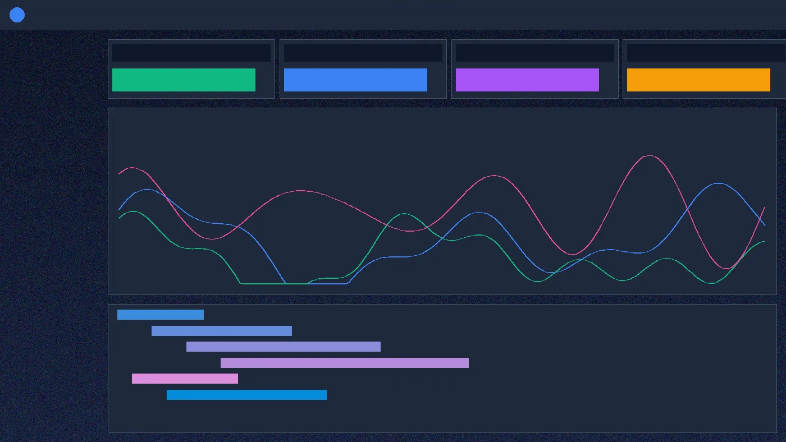
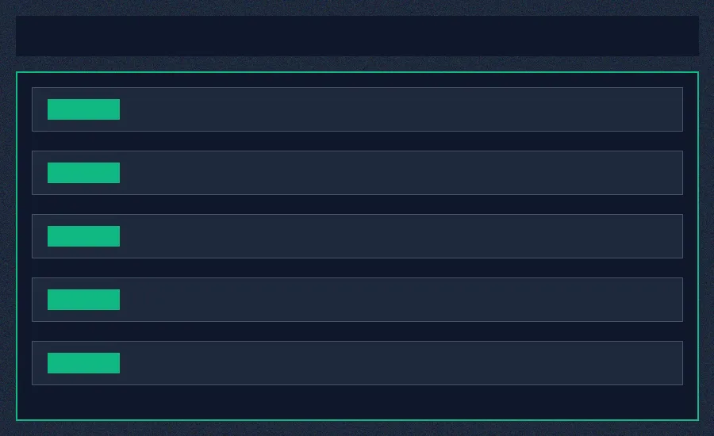

Real-Time Telemetry & Distributed Tracing for Modern Cloud Infrastructure
Consolidate multi-cloud metrics, streaming logs, and distributed APM traces into a single high-throughput engine. Reduce MTTR by 64% with sub-millisecond trace ingestion and automated anomaly detection.

Trusted by high-throughput platform engineering teams
Real-Time Cluster Throughput
Live global metrics captured via eBPF instrumentation without bytecode injection
Distributed Zero-Overhead Ingestion Pipeline
ApexPulse leverages kernel-level eBPF probes combined with a columnar time-series storage backend. Capture 100% of network packets, HTTP payloads, and database queries with less than 0.8% CPU footprint.
- Zero code refactoring or agent recompilation required
- Automated topological service dependency mapping
- SOC2 Type II and HIPAA compliant end-to-end encryption
Four Pillars of Unified Observability
Break down data silos with seamless cross-telemetry correlation
Distributed Microservice Tracing
Track request spans across multi-cloud Kubernetes clusters with automated bottleneck tagging.

High-Resolution Time Series
Ingest millions of metric points per second with nanosecond precision and automated forecasting.
Structured Log Streaming & AI Parsing
Search petabytes of application logs instantaneously with structured schema extraction.
Cloud Observability Cost Control
Identify idle pods and unindexed telemetry fields to trim enterprise cloud spend by up to 35%.
Transparent Ingestion-Based Pricing
Pay only for active telemetry ingested with predictable volume discounts
Startup
- Up to 50 GB Ingestion / mo
- 7-day Trace Retention
- 10 User Seats
- Community Support
Growth
- Up to 250 GB Ingestion / mo
- 30-day Trace Retention
- Unlimited Seats
- 24/7 Dedicated Slack Channel
Enterprise
- Petabyte-Scale Ingestion
- Custom Retention (Up to 365 days)
- Dedicated VPC Deployment
- 99.999% SLA Guarantee